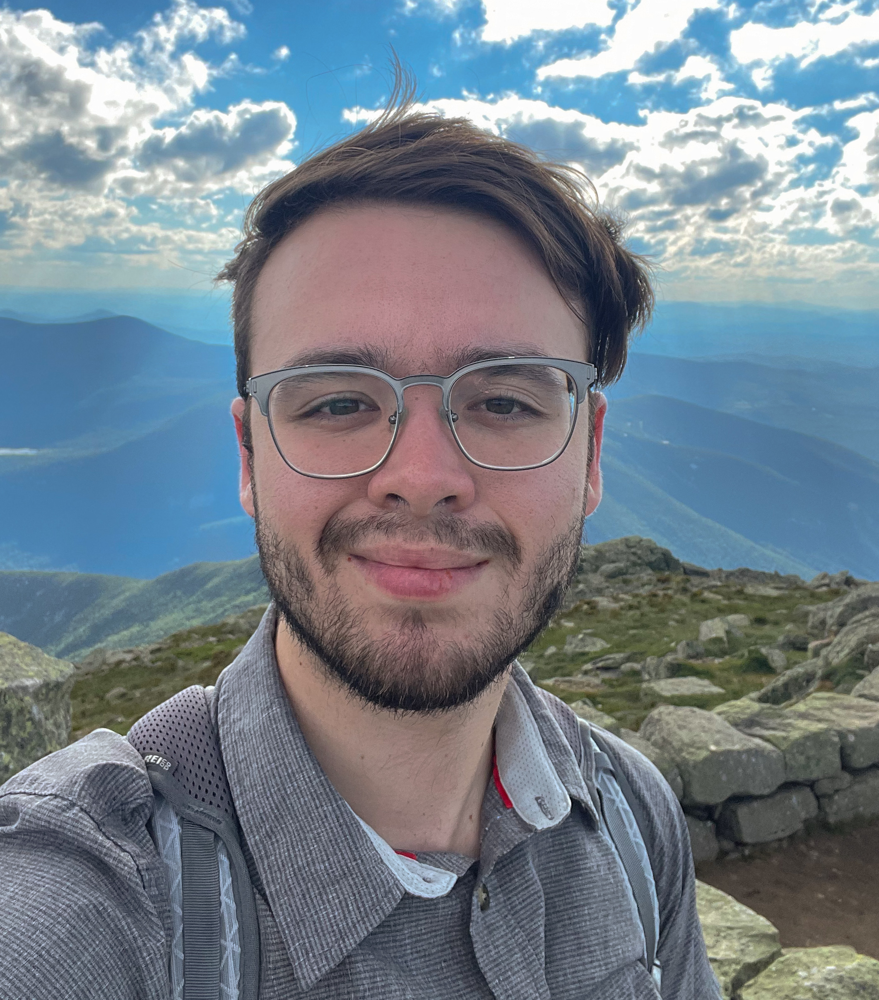

Biography

Research Interests: I am a Ph.D. Candidate studying Reinforcement Learning at the University of Massachusetts Amherst. My interest is in bringing conceptual rigor to Reinforcement Learning and Machine Learning more broadly using the techniques of mathematics. I focus on demonstrating connections between existing concepts in Machine Learning, primarily through the language of Analysis, rather than on traditional "RL theory", which focuses on the analysis of algorithms.
I was born just before the third millennium in Boston, and I've lived in Massachusetts for my whole life. I started my Bachelor of Science at the University of Massachusetts Lowell in 2015, where I started with a major focus in Biology, switched to Chemistry, and then finally switched to Mathematics. I graduated in 2019 Magna Cum Laude with a degree in Mathematics, then spent three years working under Hakho Lee at the Center for Systems Biology of Massachusetts General Hospital on Reinforcement Learning. I have been working towards a Ph.D. since Fall 2022 at the Autonomous Learning Laboratory of the University of Massachusetts Amherst, where I work on Reinforcement Learning. I am now in my fifth year.
I speak English and French and I pronounce my name /dʒɑn si ɹeɪzbɛk/.